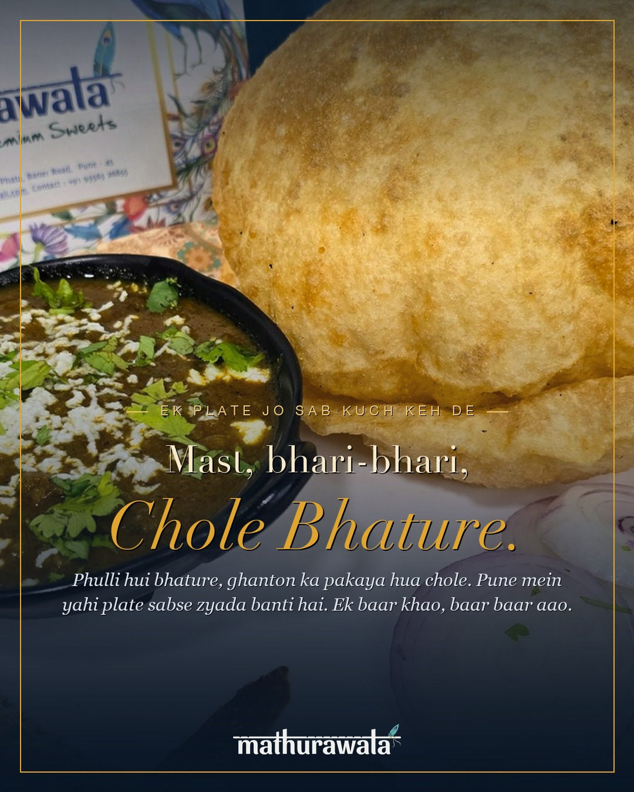
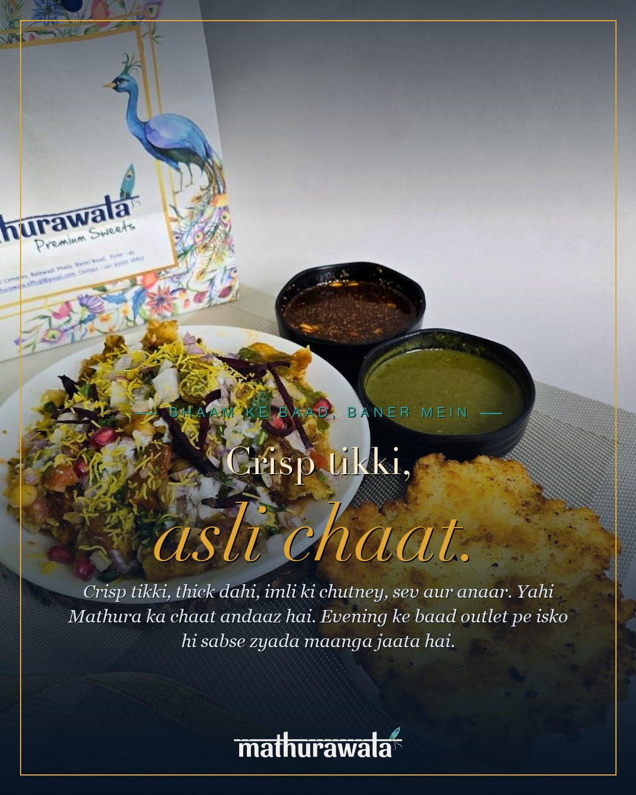
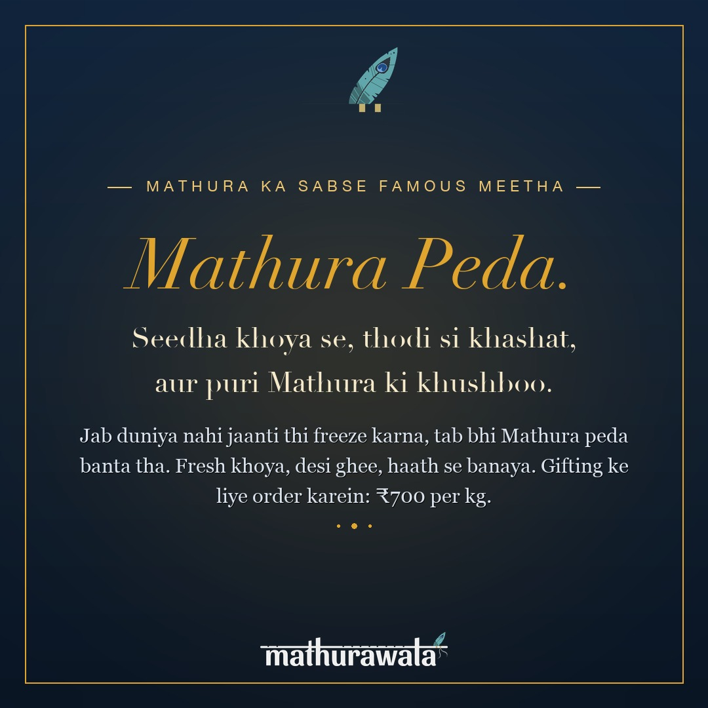
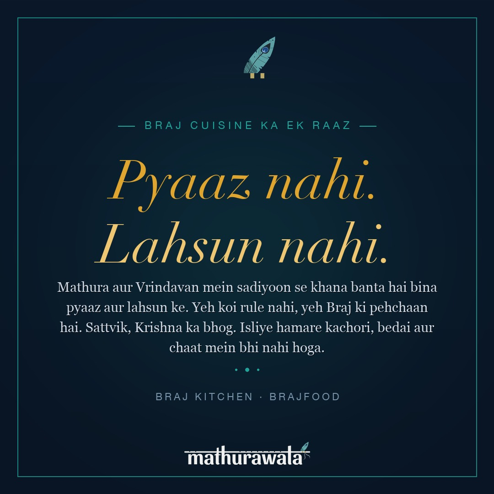

Week 3 · Mon · 9 AMFeed · 1080x1350
Chole Bhature — the plate that feeds everyone
Pune mein khaoge, toh yaad rahega.
Phulli hui bhature, ghanton ka pakaya hua chole.
Ek plate jisme sab kuch hai.
Yahi Mathurawala mein sabse zyada banti hai.
Aaiye Baner mein, ya order karein.
Radhe Radhe 🦚
#mathurawala #cholebhature #punefood #baner #aslibharatkaswad #brajfood #mathura
Best time: Mon or Tue morning 9-10AM. Lunch crowd searches for this. Boosts lunch daypart.

Week 3 · Wed · 6 PMFeed · 1080x1350
Aloo Tikki Chaat — the evening plate
Shaam ko Baner mein kuch alag hi hawa aati hai.
Crisp tikki, dahi, imli ki chutney, sev aur anaar.
Ek plate mein puri Mathura ki chaat utaar di.
Outlet aata hai toh yahi plate sabse pehle jaati hai.
Mil lo shaam ko.
Radhe Radhe 🦚
#alootikki #chaatlovers #punefood #baner #mathurawala #brajchaat #mathura #eveningsnack
Best time: Wed evening 5-6PM. Specifically for the evening chaat crowd. Drive late-afternoon visits.

Week 3 · Fri · 11 AMFeed · 1080x1080
Mathura Peda — open the gifting conversation
Mathura ka sabse purana meetha.
Khoya se bana. Thodi si khashat, desi ghee ki khushboo,
aur ek swad jo sirf Mathura mein hota hai.
Hum ise waise hi banate hain. Fresh, haath se, daily.
Gifting ke liye order karein: ₹700/kg.
Radhe Radhe 🦚
#mathura #mathurапеда #mathurапеда #peda #mithai #brajfood #indiansweets #gifting #mathurawala #punefood
Best time: Fri morning. Opens gifting conversations ahead of weekend. Add Stories with "DM for gifting orders."

Week 4 · Mon · 10 AMFeed · 1080x1080
Why no onion or garlic? — the Braj culture post
Humse aksar poochha jaata hai:
"Bhai, pyaaz nahi? Lahsun nahi?"
Nahi. Aur yeh koi limitation nahi hai.
Mathura aur Vrindavan mein sadiyoon se khana aise hi banta hai.
Sattvik. Bina pyaaz, bina lahsun. Kyunki yeh Krishna ka sheher hai.
Yahi Braj cuisine hai.
Yahi hamare kachori, bedai aur chaat mein hota hai.
Yeh taste hai. Yeh tradition hai.
Radhe Radhe 🦚
#brajcuisine #sattvik #noonionnogarlic #mathura #brajfood #krishna #mathurawala #punefood #indianfood #bharat
Best time: Mon mid-morning. Educational posts get saves and shares. In Stories, link to /braj-kitchen/sattvik-food.html for the full read. This one builds authority.